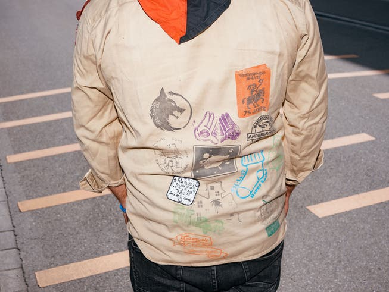
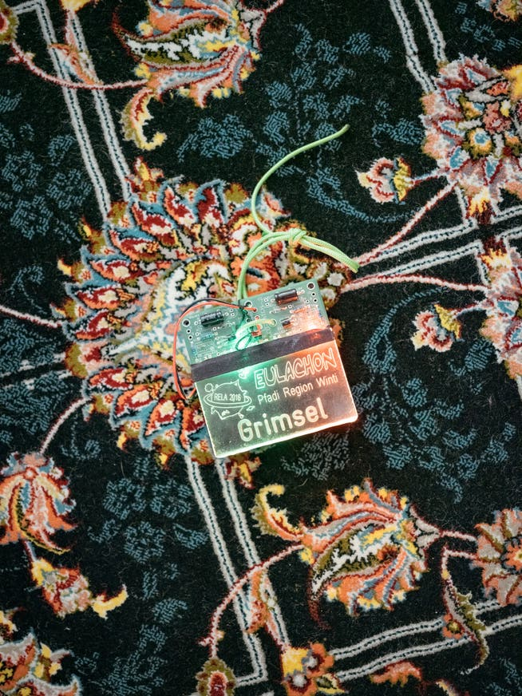
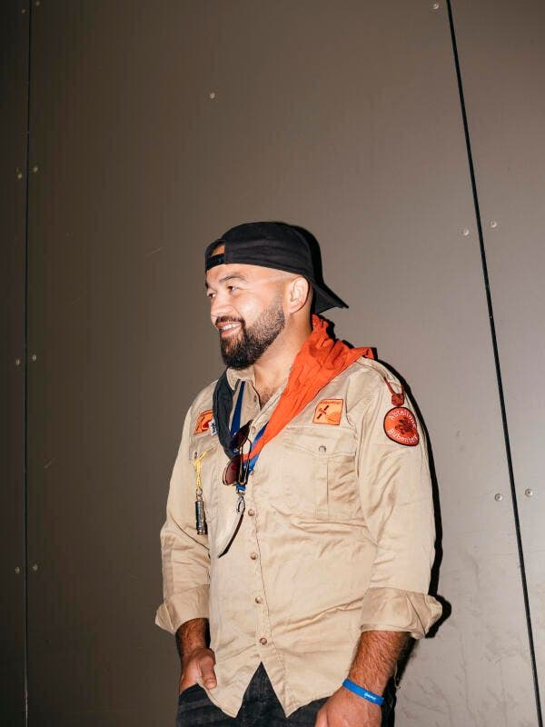

NZZ Magazin Artikel
Die Pfadi könnte die Integration fördern. Stattdessen heisst es: «Du gseesch chuum anderi Nationalitäte»
Eigentlich wäre die Pfadi ideal, um ausländische Kinder zu integrieren. Doch die Migranten bleiben ihr fern. Warum nur?
René Donzé (Text), Philip Frowein (Bilder), NZZ Magazin
Im richtigen Leben heisst er Omid Jafari, in der Pfadi rufen sie ihn Grimsel. So schweizerisch sein Pfadiname, so exotisch seine Herkunft: Grimsel ist Afghane, aufgewachsen in Iran, vor sechs Jahren in die Schweiz geflüchtet. «Du gseesch chuum anderi Nationalitäte i de Pfadi», sagt er in fast akzentfreiem Winterthurer Dialekt. Er ist die grosse Ausnahme: Die Pfadfinderbewegung Schweiz ist vor allem eine Bewegung der einheimischen Mittelstandsfamilien. Nach einer langen Phase des Mitgliederschwunds wächst sie seit zehn Jahren wieder. Dennoch sind Secondos noch immer selten, Flüchtlinge noch seltener. Das wird sich auch diesen Sommer wieder zeigen, wenn sich ab dem 23. Juli über 30 000 Pfadfinderinnen und Pfadfinder zum Bundeslager im Goms treffen, dem Höhepunkt in jedem Pfadileben.
Die Geschichte von Grimsel zeigt, was die Pfadfinderbewegung an Integration leisten kann – und warum sie sich damit oft schwertut. Als Omid Jafari mit knapp 17 Jahren in die Schweiz kam, verstand er bloss das bisschen Deutsch, das er von Youtube-Filmen gelernt hatte. Nun befindet er sich in der Lehrabschlussprüfung. Daneben engagiert er sich im Kulturlokal Salzhaus, hat viele Freunde und seit kurzem die Aufenthaltsbewilligung B. «Meine ausländischen Kollegen sagen: Omid, du bist so ein Schweizer geworden.» Er nimmt es als Kompliment.
  Omid Jafari, vor 6 einhalb Jahren aus Iran in die Schweiz gekommen, zu Hause in Winterthur. Seit ca. 6 Jahren ist er bei den Pfadfindern dabei.
Seit Jahren schon bemüht sich die Pfadibewegung Schweiz darum, die unsichtbare Mauer zu durchbrechen, die sie zu umgeben scheint. Statistiken zum Ausländeranteil gibt es zwar keine, doch ein Blick auf Bilder und Namen auf den Websites der Abteilungen genügt, um das schweizerische Bild der Bewegung zu bestätigen. Warum ist das so?
Die Frage führt von Winterthur nach Zürich Nord. Dort ist Anubis Leiter der Pfadi-Abteilung Morea. Er heisst mit richtigem Namen Yves Arigbabu. Anubis kennt beide Welten: Sein Vater stammt aus Nigeria, seine Mutter aus der Schweiz, geboren und aufgewachsen ist er in der Schweiz.
Er schätzt, dass in seiner Abteilung etwa 80 Prozent der Kinder und Jugendlichen aus Schweizer Familien kommen, «die weder reich noch arm sind». Tendenz steigend, da die Zürcher Stadtkreise Oerlikon und Seebach zunehmend gentrifizieren. Er selbst stiess erst spät, mit 14 Jahren, zur Pfadi, als er schon im Gymnasium war. «Die Mutter hatte viel Verständnis für meine Begeisterung, dem Vater war die Pfadi anfangs sehr fremd.»
Wandern? Bloss nicht!
Pfadi wird in der Schweiz quasi vererbt: Waren die Eltern schon dabei, dann schicken sie auch ihre Kinder hin. «Es ist ein Wert, der ihnen wichtig ist», sagt Anubis. Haben die Eltern hingegen Migrationshintergrund, kennen sie oft die Pfadi nicht oder haben ein falsches Bild davon. In einigen Ländern, wie etwa in Exjugoslawien, war sie sogar bis vor wenigen Jahren verboten. In anderen machten sie wegen Missbrauchsfällen Schlagzeilen.
Pfadi wird in der Schweiz quasi vererbt: Waren die Eltern dabei, gehen auch die Kinder hin. Die Eltern sind das eine, die Kultur ist das andere. Kürzlich fuhr Grimsel mit Freunden, Secondos, im Auto zum Obersee bei Näfels, wo er schon mit der Pfadi gewesen war. «Sie staunten, wie schön die Schweiz ist», erzählt er. «Aber sie konnten einfach nicht verstehen, warum man freiwillig hier hochwandert.» Im Wald spielen, bräteln oder gar freiwillig Abfall sammeln oder im Zelt übernachten? Oft werde er schräg angeschaut, wenn er erzählt, was in der Pfadi gemacht wird. Dann doch lieber Fussball spielen.
Entsprechend scheitern auch immer wieder Anläufe der Integration. So nach der grossen Flüchtlingswelle 2015. Damals wurden in der ganzen Schweiz Projekte entwickelt, um Flüchtlingskindern die Pfadi näherzubringen. So entstand in der Zentralschweiz und in Bern «Pfasyl»: Pfadi in Asylzentren. Es gibt sie noch heute, doch kaum ein Kind schaffte es in die reguläre Pfadi.
Die Pfadi Morea hatte einst sechs Kinder aus Asylzentren in ein Lager mitgenommen: «Es hat ihnen Spass gemacht, doch dann sind sie nie wieder aufgetaucht», sagt Anubis. Und Grimsel erzählt, dass damals gleichzeitig mit ihm 18 jugendliche Asylbewerber aus Winterthur in ihr erstes Pfadilager gingen. Alle gaben auf.
Das führt zum dritten Grund, warum sich die Pfadi schwertut mit der Integration: die Schweizer Kinder. «Ich habe mich nie so einsam gefühlt wie in meinem ersten Pfadilager», sagt Grimsel. Die anderen hätten sich abgewandt, Mundart gesprochen, ihn aussen vor gelassen. «Es musste immer alles von meiner Seite kommen.»
Leiter sensibilisieren
In den ersten sechs Monaten dachte er oft ans Aufhören. Doch er ging weiterhin samstags an Übungen, liess sich taufen, trank den schrecklichen Zaubertrank, verpasste keine Lager, lernte den Dialekt und die Mentalität der Schweizer kennen. «Du kannst als Leiter nicht einfach chillen und die Schweizer Kinder machen lassen, sonst bleiben sie unter sich», sagt Grimsel, der selbst Leiter ist. «Du musst sie immer wieder motivieren, mit dem Ausländerkind zu spielen, es mitzunehmen, Hochdeutsch mit ihm zu sprechen.» Kommunikation und Sozialleben sind zentral in der Pfadi – viel wichtiger etwa als in Sportvereinen, wo das Training im Zentrum steht.
 «Du bist so ein Schweizer geworden», sagen Kollegen: Omid Jafari – Pfadiname Grimsel.
«Hier müssen wir ansetzen», sagt Samira. Sie heisst richtig Rahel Felder und ist beim Kantonalverband Pfadi Züri für das Ressort Diversität und Inklusion verantwortlich. «Wir streben auch an, dass jede Abteilung eine verantwortliche Person für Integration hat», sagt Samira.
In der ganzen Schweiz werden derzeit die Bemühungen verstärkt, auch Migrantenkinder anzusprechen. In Zürich hat die Pfadi ihre Ausbildungslehrgänge angepasst, damit Leiterinnen und Leiter besser auf den Umgang mit Ausländerkindern vorbereitet sind. Zudem sollen für die Schulung neue Informationsmaterialien erarbeitet werden. Um die Schwellen weiter abzubauen, hat Pfadi Züri das Ziel, einen kantonalen interkulturellen Schnuppertag einzuführen.
Ob die Bemühungen ausreichen? Grimsel wünscht sich, dass die heute ehrenamtlichen Leiter für die Teilnahme an Lagern entschädigt werden. Denn viele junge Erwachsene mit Migrationshintergrund absolvieren wie er eine Berufslehre. Spätestens dann stiegen sie meist wieder aus der Pfadi aus, während es für Gymnasiastinnen und Studenten leichter sei, Ausbildung und Pfadi zu vereinbaren. Früher ging Grimsel in viele Lager, auch von anderen Abteilungen. Er kochte und bemühte sich um die Integration von Ausländerkindern. Nun muss er kürzertreten. «Ich kann es mir nicht mehr leisten, so oft unbezahlte Ferien zu nehmen», sagt er. Am Bundeslager wird er nur drei Tage teilnehmen.
Index
{kind=link}
{kind=link}
{kind=link}